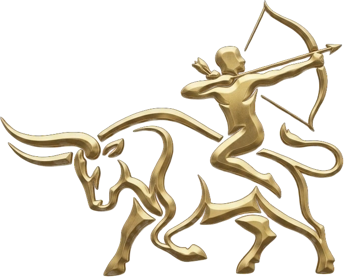
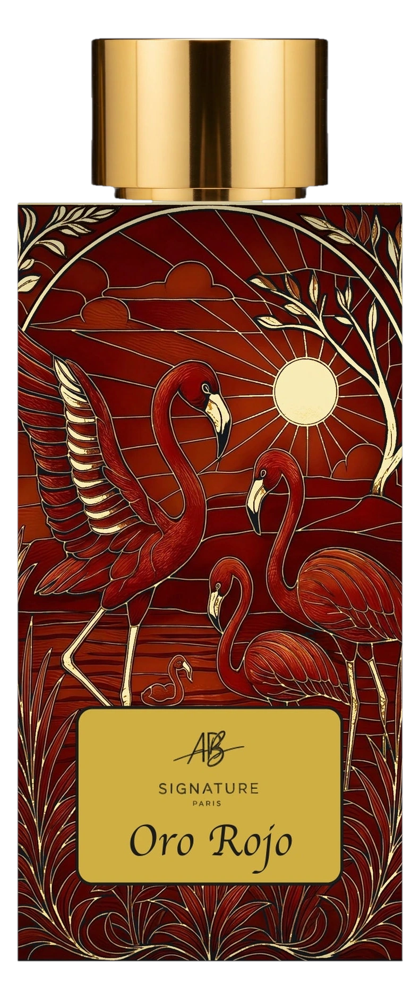
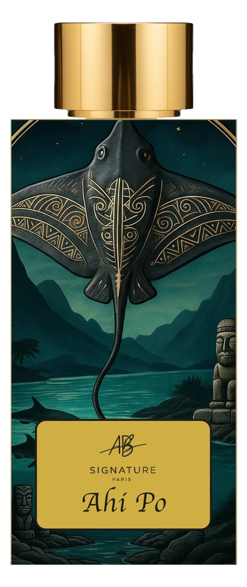

La force tranquille. La patience, la terre, le socle. Ce qui ne cède pas.
L’élan et la visée. L’horizon pour seule direction. Ce qui ne s’arrête pas.
L’arc porte l’amour — tendu, patient, précis. La flèche part ; l’empreinte reste.
Il traverse les siècles sans perdre son éclat : l’intemporel, l’excellence, la transmission. Sur chaque bouchon, il scelle la promesse.
Pas une adresse : un embarquement. La porte d’où partent les voyages qui nourrissent chaque création.
Trois îles, trois heures du monde. Les destinations deviennent des chapitres ; les chapitres, des parfums ; les parfums, des souvenirs que l’on porte.
La lumière traverse la laque comme elle traverse un souvenir. À contre-jour, le verre s’éclaire : le voyage continue dans le flacon.

L’évidence solaire — le couchant d’Aruba, la cerise embrasée de safran. Choisi à la première rencontre ; jamais quitté depuis.
Découvrir Oro Rojo →
La nuit sacrée de Moorea — cassis perlé de rosée, cuir noble, l’aube pour seule fin. Le choix de celui qui voyage quand les autres dorment.
Découvrir Ahi Pō →Dix-huit mouillettes en sont nées. Trois références ont survécu.
Le document, lui, reste scellé.